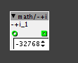
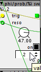

While patching, sometimes objects are reset to their maximal or minimal values. Anyone else?  It is really annoying and i suspect the undo funktion Here the patch I encounter the "dementia". The patch forgets also after saving. to reproduce edit something and and go live, reapeat some times Slowlfo8test.axp (54.2 KB)
After restarting the axo Patcher it works again, maybe it has to do with the windows save energie modus, i will investigate further.. No after a while the patch acts weird ...hmm
I tried to embed or replace the missing objects,(hope it works) but even if these objects are in my home folder, why do they show this behavior? its also affects sss repeater, but (i think) not factory objects
for instance the reset button on Tbclock is sometimes pressed on load...
I solved the ghostly behaving faders ! If i used presets, if preset in = 0 then ALL params will be set to default value. Maybe the int issue comes from transforming an attribute to a parameter?
I still have a problem with my object phi/prob/%i sw  when i start a patch , its outputs and displays a very high/low number , and only if it receives a trigger , the output is set to a value inside the given range. So it needs a kind of a loadbang inside the code. Could someone please have a look at the code?
I still have a problem with my object phi/prob/%i sw ..could you have look.....i got problems with default value
which default value do you mean? that of the integer control? because that one just doesn't get saved as default somehow..
yes thats what i meant....
I ran into the same problem, several of my modules could use a default value for that control, as they're "off" with zero... lets adress that to @johannes
now it gets even weirder... saved the non-working module (with the control named SS) and loaded it.. control suddenly works, while the old module, still next to it, doesn't work.. hahaa
not funny
ok, if it ever happens to you... just rename the control...
I think it's the exact same problem I indeed had that happen a couple of times..

{kind=link}